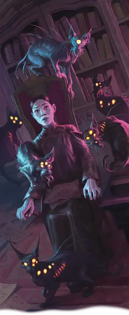

Наблюдаемый
Watchers
Черта Тёмного дара (Требования: кампания в Равенлофте)

Что-то неестественное неотступно наблюдает за вами глазами копошащихся грызунов, насекомых и других жутких тварей. Вы получаете следующие преимущества:
Глазами взаймы. У вас всегда подготовлены заклинания Животные чувства и Разговор с животными. Вы можете сотворить каждое из них один раз без траты ячейки заклинаний, и вы восстанавливаете способность сотворить их таким образом по завершении Долгого отдыха. Вы также можете сотворять эти заклинания с имеющимися у вас ячейками заклинаний.
Обострённая подозрительность. Всякий раз, когда вы совершаете действие Поиск, можете добавлять бонус 1к4 к любой проверке характеристики, совершаемой частью этого действия.
Неусыпные соглядатаи. Вы совершаете с Помехой спасброски от заклинания Наблюдение.
Вдобавок сразу после того, как при совершении вами Теста к20 на к20 выпадает «1», вас грозит захлестнуть всепоглощающая паранойя. Совершите спасбросок Мудрости (Сл 13 + ваш Бонус владения); при провале вы получаете Помеху на все Тесты к20 на 1 минуту. Вы можете повторять спасбросок в конце каждого вашего хода, оканчивая эффект при успехе.